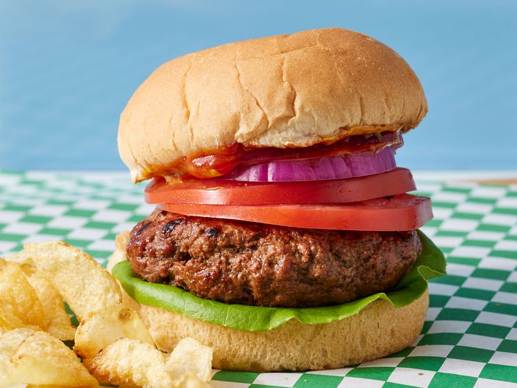

Hamburger

These grilled burgers are tender and juicy with a smoky flavor.
Serve on buns with your favorite toppings.
Ingredients
- Ground Beef
- Worcestershire Sauce
- Liquid Smoke Flavoring
- Garlic Powder
- Olive Oil
- Salt
Steps
- Gather the ingredients.
- Preheat an outdoor grill for high heat and lightly oil the grate.
- Combine ground beef, Worcestershire sauce, liquid smoke, and garlic powder in a medium bowl; lightly mix until just combined.
- With minimal handling, form mixture into three patties.
- Brush oil onto both sides of each patty, then season with salt.
- Cook patties on the preheated grill until no longer pink in the center, about 5 minutes per side.
An instant-read thermometer inserted into the center should read at least 160 degrees F (70 degrees C).
Home